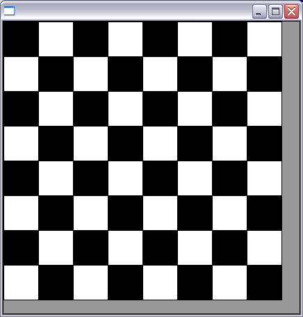
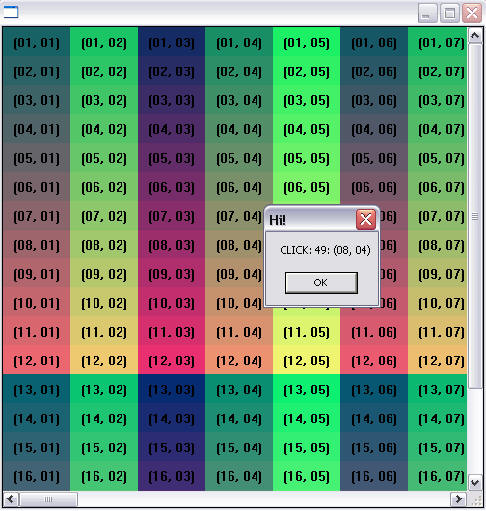

Creates a grid widget (set of cells) that enables several application-specific drawing, such as: chess tables, tiles editors, degradeé scales, drawable spreadsheets and so forth.
This element is mostly based on application callbacks functions that determine the number of cells (rows and coluns), their appearence and interation. This mechanism offers full flexibility to applications, but requires programmers attention to avoid infinite loops inside this functions. Using callbacks, cells can be also grouped to form major or hierarchical elements, such as headers, footers etc.
Since the size of each cell is given by the application the size of the control also must be given using SIZE or RASTERSIZE attributes.
This callback approach was intentionally chosen to allow all cells to be dinamically and directly changed based on application's data structures.
This control implementation is directly inherited on IupCanvas, and is originally implemented by André Clinio.
Ihandle* IupCells(void); [in C] iup.cells{} -> (elem: ihandle) [in Lua] cells() [in LED]The function returns the identifier of the created Cells, or NULL if an error occurs.
BOXED: Determines if the bounding cells' regions should the drawn with black lines. It can be "YES" or "NO". Default: "YES".If the span atributtes are set set this attribute to "NO" to avoid grid drawing over spanned cells.
CLIPPED: Determines if, before cells drawing, each bounding region should be clipped. This attribute should the changed in few specific cases. It can be "YES" or "NO". Default: "YES".
NON_SCROLLABLE_LINES: Determines the number of non-scrollable lines (vertical headers) that should allways be visible despite the vertical scrollbar position. It can be any non-negative integer value. Default: "0"
NON_SCROLLABLE_COLS: Determines the number of non-scrollable columns (horizontal headers) that should allways be visible despite the horizontal scrollbar position. It can be any non-negative integer value. Default: "0"
ORIGIN: Sets the first visible line and column positions. This attribute is set by a formatted string
"%d:%d"(C syntax), where each "%d"represent the line and column integer indexes respectely.REPAINT: When set with any value (write-only), provokes the control full repaint.
FULL_VISIBLE: Tries to show completely a specific cell (considering any vertical or horizontal header or scrollbar position) .This attribute is set by a formatted string
"%d:%d"(C syntax), where each "%d"represent the line and column integer indexes respectely.NO_COLOR: Adjusts the default color of cells which the drawing callback does nothing. Default: the BGCOLOR attribute.
LIMITS: (Read Only) Returns the limits of a given cell. Input format is "
lin:col" or "%d:%d"in C. Output format is"xmin:xmax:ymin:ymax"or"%d:%d:%d:%d"in C.FIRST_COL: (Read Only) Returns the number of the first visible column.
FIRST_LINE: (Read Only) Returns the number of the first visible line.
BUFFERIZE: When set to "YES", disables the control redrawing. It should be used only to avoid the control blinking effect when several attributes are being changed at sequentially. When REPAINT attribute is set, BUFFERIZE is automatically adjusted to "NO". Default: "NO".
IMAGE_CANVAS: Returns the internal image CD canvas (read-only). This attribute should be used only in specific cases and by experienced CD programmers.
CANVAS: Returns the internal IUP CD canvas (read-only). This attribute should be used only in specific cases and by experienced CD programmers.
MOUSECLICK_CB: called when a color is selected. The primary color is selected with the left mouse button, and if existant the secondary is selected with the right mouse button.
int function(Ihandle* self, int button, int pressed, int line, int column, int x, int y, char* status); [in C] elem:mouseclick_cb(button, pressed, line, column, x, y: number, string: status) -> (ret: number) [in Lua]self: identifies the control that activated the function's execution.
but: identifies the activated mouse button (just like in canvas control):IUP_BUTTON1 left mouse button (button 1);
IUP_BUTTON2 middle mouse button (button 2);
IUP_BUTTON3 right mouse button (button 3).pressed: indicates the state of the button:
0 mouse button was released;
1 mouse button was pressed.x, y: raster position (relative to the canvas) where the event has occurred, in pixels.
line, column: the grid position in the control where the event has occurred, in grid coordinates.
status: status of the mouse buttons and some keyboard keys at the moment the event is generated. The following macros must be used for verification:isshift(status)
iscontrol(status)
isbutton1(status)
isbutton2(status)
isbutton3(status)
isdouble(status)They return 1 if the respective key or button is pressed, and 0 otherwise.
MOUSEMOTION_CB: called when the mouse moves over the control.
int function(Ihandle *self, int line, int column, int x, int y, char *r); [in C] elem:mousemotion_cb(x, y: number, r: string) -> (ret: number) [in Lua]self: identifier of the canvas that activated the function's execution.
x, y: position in the canvas where the event has occurred, in pixels.
line, column: the grid position in the control where the event has occurred, in grid coordinates.
r: status of mouse buttons and certain keyboard keys at the moment the event was generated. The following macros must be used for verification:isshift(r)
iscontrol(r)
isbutton1(r)
isbutton2(r)
isbutton3(r)
isdouble(r)DRAW_CB: called when a specif cell needs to be repainted.
int function(Ihandle* self, int line, int column, int xmin, int xmax, int ymin, int ymax); [in C] elem:draw_cb(line, column, xmin, xmax, ymin, ymax: number) -> (ret: number) [in Lua]line, column: the grid position inside the control that is being repainted, in grid coordinates.
xmin, xmax, ymin, ymax: the raster bounding box of the repainting cells, where the application can use CD functions to draw anything. If the atributte IUP_CLIPPED is set (the default), all CD graphical primitives is clipped to the bounding region.The returned value is ignored.
Important note: Inside this callback, the cdActivate() function call is not required. Before DRAW_CB is called, the active cdCanvas is properly set; and correctly restored when this function ends. Moreover, all CD attributes are saved and set back for the callback calling, so that the application does not need to deal with the graphical attributes restoration.
WIDTH_CB: called when the controls needs to know a (eventually new) colunm width
int function(Ihandle* self, int column); [in C] elem:width_cb(column: number) -> (ret: number) [in Lua]column: the column index
The return value should be an integer that specifies the desired width (in pixels). Negative values will be ignored.
HEIGHT_CB: called when the controls needs to know a (eventually new) line heigth.
int function(Ihandle* self, int line); [in C] elem:height_cb(line: number) -> (ret: number) [in Lua]line: the line index
The return value should be an integer that specifies the desired heigth (in pixels). Negative values will be ignored.
NLINES_CB: called when then controls needs to know its number of lines.
int function(Ihandle* self); [in C] elem:nlines_cb() -> (ret: number) [in Lua]The return value should be an integer that specifies number of lines. Negative values will be ignored and considered as zero
NCOLS_CB: called when then controls needs to know its number of columns.
int function(Ihandle* self); [in C] elem:ncols_cb() -> (ret: number) [in Lua]The return value should be an integer that specifies number of lines. Negative values will be ignored and considered as zero
HSPAN_CB: called when the control needs to know if a cell should be horizontally spanned.
int function(Ihandle* self, int line, int column); [in C] elem:hspan_cb(line, column: number) -> (ret: number) [in Lua]line, column: the line and colun indexes (in grid coordinates)
The return value should be an integer that specifies the desired span Negative values will be ignored and treated as 1 (no span)
If this callback is not set, all cells will not have any span (default value 1).
VSPAN_CB: called when the control needs to know if a cell should be vertically spanned.
int function(Ihandle* self, int line, int column); [in C] elem:vspan_cb(line, column: number) -> (ret: number) [in Lua]line, column: the line and colun indexes (in grid coordinates)
The return value should be an integer that specifies the desired span. Negative values will be ignored and treated as 1 (no span)
If this callback is not set, all cells will not have any span (default value 1).
SCROLLING_CB: called when the user right click a cell with the Shift key pressed. It is independent of the SHOW_SECONDARY attribute.
int function(Ihandle* self, int line, int column); [in C] elem:scrolling_cb(line, column: number) -> (ret: number) [in Lua]line, column: the first visible line and colunm indexes (in grid coordinates)
The return value should be IUP_DEFAULT is the application wants the grid to be repainted.
If this callback is not set, all visible cells are redrawn after the scrollbar adjustments.
Checkerboard Pattern
Numbering Cells
